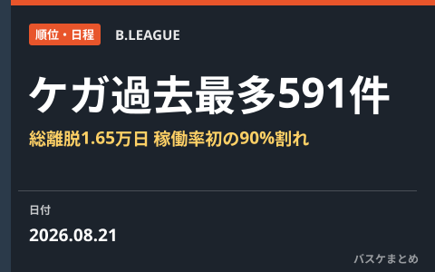
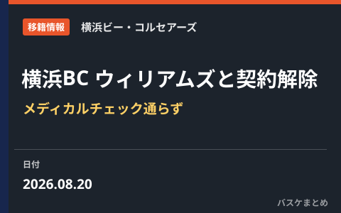
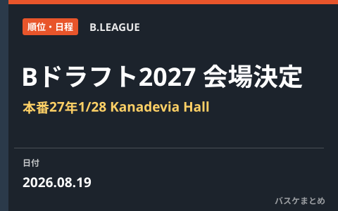
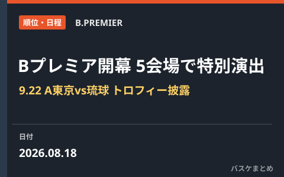

編集部まとめ記事 一覧
試合結果・速報・移籍情報・データのまとめ記事を新しい順に並べています。

順位・日程
男子日本代表、W杯予選グループFで首位浮上 カタール撃破で6勝2敗 11月Window5はレバノン・カタールとアウェー2連戦

速報
「B.LEAGUE 2026-27 TIPOFF CEREMONY」増上寺で開催 全55クラブの代表選手が集結、開幕まで3週間

試合結果
男子日本代表、カタールに123-70で圧勝 八村塁30得点・河村勇輝9アシストでレバノンと並ぶ6勝目

速報
男子日本代表、本日8月31日19:10カタール戦 富樫外れ渡邊雄太が復帰の12名 W杯予選2位死守なるか

試合結果
佐賀バルーナーズ、プレシーズンで前季B1王者・長崎ヴェルカに89-85で競り勝つ 新加入ナシール・リトルが躍動

順位・日程
W杯予選グループF、日本代表はサウジ撃破で2位浮上 首位レバノン・3位中国、8月31日カタール戦が正念場

試合結果
男子日本代表、サウジアラビアに106-78で快勝 八村塁29得点・河村勇輝9アシストでW杯予選Window4白星発進

速報
男子日本代表、W杯予選Window4サウジアラビア戦は8月28日未明にABEMA・テレビ朝日系で生中継

速報
上白石萌音「Trophy」がB.LEAGUE 2026-27公式テーマソングに決定

速報
「B.LEAGUE 2026-27 TIPOFF CEREMONY」出演選手発表 富樫勇樹・馬場雄大ら全55クラブ集結

試合結果
「KOBE RISING -2026-」閉幕 神戸ストークスは千葉ジェッツに95-100で惜敗、島根は北海道に1点差で涙

速報
女子日本代表、W杯出場12名を発表 山本麻衣は現地合流 9月4日ベルリン開幕

速報
「KOBE RISING -2026-」本日開幕 神戸ストークスが千葉ジェッツ・レバンガ北海道と対戦

順位・日程
Bリーグ、選手のケガ過去最多591件 総離脱1万6521日、稼働率が初の90%割れ

移籍情報
横浜BCが外国籍ウィリアムズと契約解除 メディカルチェック通らず、新戦力獲得へ

順位・日程
「B.LEAGUE DRAFT 2027」会場決定 コンバインは12月17日横浜武道館、本番は27年1月28日Kanadevia Hall

順位・日程
Bプレミア開幕、5会場で特別演出 9月22日はA東京vs琉球で55人パフォーマーがトロフィー披露

試合結果
河村勇輝24得点で日本代表が韓国に95-66で2連勝、八村塁は欠場｜SoftBank CUP 2026

試合結果
八村塁22得点で衝撃の代表復帰、日本代表が韓国に88-68快勝｜買取大吉カップ2026

速報
八村塁がパリ五輪以来の代表復帰、河村勇輝も合流 男子日本代表 8/15･16韓国戦ロスター発表
最終更新: 2026年10月13日 05:39